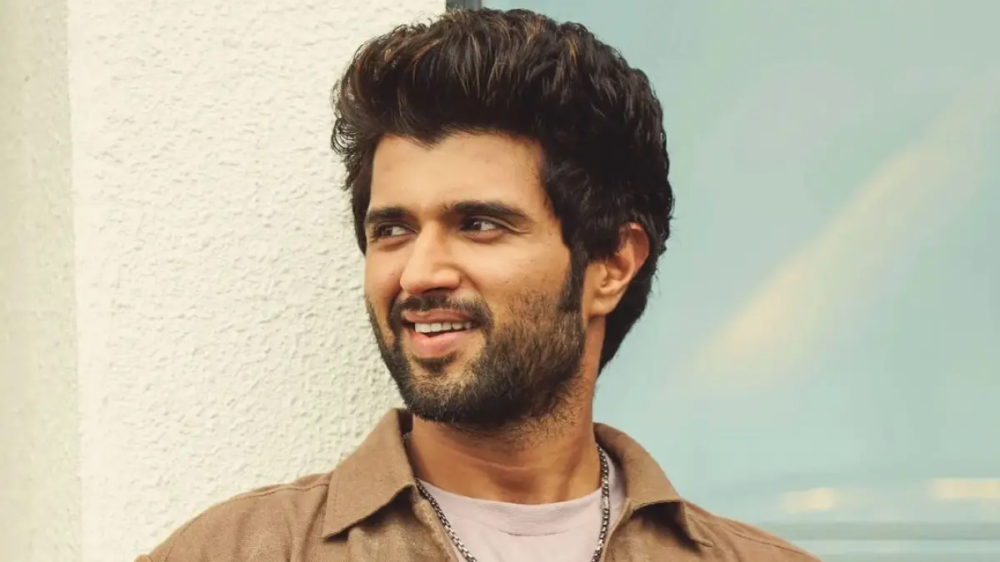

Vijay Devarkonda

Deverakonda Vijay Sai (born 9 May 1989), better known as Vijay Deverakonda,[1] is an Indian actor and film producer who works predominantly in Telugu cinema.[2][3] He is the recipient of a Filmfare Award, a Nandi Award, and a SIIMA Award.[4] Since 2018, he has featured in Forbes India's Celebrity 100 list due to his income and popularity.
Deverakonda made his debut with Nuvvila (2011) and received praise for his role in Yevade Subramanyam (2015). He established himself as a leading film actor with the blockbusters Pelli Choopulu (2016) and Arjun Reddy (2017), and gained further success by starring in Mahanati (2018), Geetha Govindam (2018), and Taxiwaala (2018).[5][6] Deverakonda won the Filmfare Best Actor Award for his performance in Arjun Reddy.
In 2019, Deverakonda was seen in Bharat Kamma's Dear Comrade, a romantic action drama, alongside Rashmika Mandanna. He later signed Hero, directed by Anand Annamalai co-starring Malavika Mohanan. But the film was reportedly shelved after beginning its production.[29] In 2020, he acted in Kranthi Madhav's romantic drama World Famous Lover opposite Raashi Khanna, Catherine Tresa, Aishwarya Rajesh, and Izabelle Leite which opened to negative reviews.[30] In 2022, he acted in the Hindi–Telugu bilingual film Liger which was directed by Puri Jagannadh and produced by Karan Johar which also opened to negative reviews.
Deverakonda ventured into production under the banner King of the Hill Entertainment, which notably backed Meeku Maathrame Cheptha (2019) and Pushpaka Vimanam (2021).[7][8] Beyond his film career, Deverakonda endorses many products and designed his own fashion brand Rowdy Wear, which premiered on Myntra in 2020.[9]